IGRAC: Georeferencing Methodology¶
The objectives of this project are:
- To georeference the geological maps from Zimbabwe and Mozambique.
- Digitize the georeferenced sheets capturing the primary features on the sheets.
- Symbolize the vector features that have been captured.
The primary software that will be used for this is QGIS. The tasks in this project will be split into the three distinct sections based on the aims mentioned above.
Georeferencing MapSheets¶
The map sheets covers Zimbabwe and Mozambique. The methodology used to georeference and digitize the features will largely depend on the quality of the provided map sheets. The process of georeferencing the maps depends on several factors:
- What is the spatial resolution of the current map sheets.
- What is the date at which the map sheets were acquired (produced)
- Coordinate reference system of the map sheets.
- What transformation algorithm to use. QGIS provides plenty of these and detailed explanation cen be found from Georeferencing transformation algorithms
For more information about the QGIS Georeferencer can be found on the QGIS Documentation website
Mozambique¶
There are two map sheets which are provided
- Southern Sheet
- Northern Sheep
The georeferencing process will likely be similar for these two sheets.
Analysis of map sheets before georeferencing¶
After loading the raster images (Mozambique Hydrological Map_North Region and Mozambique Hydrological Map_South Region tifs)
into QGIS and doing some investigation. The following conclusion were established:
-
The Coordinate Reference System (CRS) for the Mozambique raster images (.tif) was unknown. In the
Legenda(Legend)on theMozambique Hydrological Map_South Regionimage, it is stated "Projeccao Conica Conforme de Lambert" (Lambert Conic Conformal Projection). The Lambert Conic Conformal Projection requires two parallels, a central meridian, and a Datum. The two parallels and the central meridian were obtained from the scanned maps, and then through research the datum was discovered to be the Tete datum (discovered through this column by Clifford J. Mugnier for ASPRS.org). A custom CRS was the made using that information. -
There is a need to create a new custom CRS to use in QGIS for the georeferencing. The custom CRS using the Tete datum worked but, due to lack of information on the scanned images, was not accurate for georeferencing. A new custom CRS based on the WGS84 datum was made using the proj4 string:
+proj=lcc +lat_0=0 +lon_0=35.5 +lat_1=-14 +lat_2=-24 +x_0=0 +y_0=0 +datum=WGS84
+units=m +no_defs
The new CRS was made to save having to perform datum transformations in the future. It was then decided that georeferencing would be done using the GAUL dataset for reference points because a graticule transformation was not possible.
Georeferencing Mozambique Southern Region¶
Multiple iterations were required as the georeferencing was done against a reference dataset and could not be done by simply taking the corner graticules from the tif and projecting them into the custom CRS.
Georeferencing Parameters for Southern sheet¶
Georeferencing is an iterative process, and we needed to try different parameters to establish the most suitable ones to use.
The methods below describe the different parameters that were tested with the raster images.
Test Parameters¶
This describes the parameters that were tested, and we found to be not adequate to use for georeferencing.
| Iteration | Transformation Type | Outcome |
|---|---|---|
| First | Linear Transformation | The resulting image ended up being spatially too different from the reference dataset and so was immediately discarded. See the image below table. |
| Second | Helmert transformation | Gave a decent result but there were far too many discrepancies between the reference layer and the georeferenced image |
| Third | Helmert Transformation | The Helmert Transformation was used again but with all Residual pixels for the Ground Control Points (CPs) being under 10. 9 GCPs were used for the referencing. There were too many discrepancies between the reference dataset and the georeferenced image, so it was disregarded as a viable image. |
| Fourth | Polynomial 1 Transformation | All of the residual pixels were less than 10 and 12 GCPs were used. Again, there were too many discrepancies between the reference dataset and the georeferenced image but there was minimal warping on the polygons. |
| Fifth | Polynomial 1 Transformation | All of the residual pixels were less than 10 and 17 GCPs were used. There were fewer discrepancies between the reference dataset and the georeferenced image than in the previous iterations but there was slight warping on the polygons. |
| Sixth | Polynomial 2 Transformation | All of the residual pixels were less than 10 and 18 GCPs were used. There were fewer discrepancies between the reference dataset and the georeferenced image than in the previous iterations but there was warping on the polygons. |
| Seventh | Thin Plate Spline transformation | All residual pixels were zero but this was likely a false result. This iteration had the best results for lining up the georeferenced image with the reference dataset. 102 GCPs were used to help correct discrepancies from previous iterations. The main issue with this transformation was the significant warping of the polygons in the georeferenced image. |
Discarded first iteration of georeferencing Mozambique South 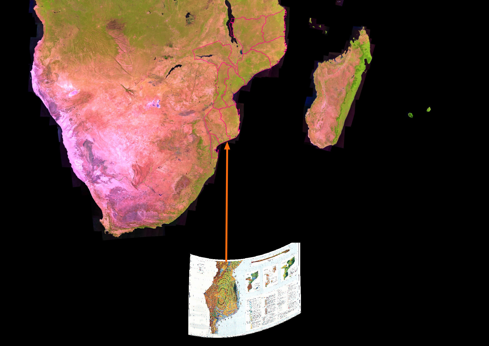
Final Parameters Selected¶
After testing other types of transformations it was decided that using the Polynomial 1 transformation gave the best
result. This transformation type warped the internal polygons of Mozambique's Southern Region the least but more
GCPs would help to correct the discrepancies between the reference dataset and the tif. 55 GCPs, with residual pixels
lower than 10, were used for the georeferencing and ended up with the best result. The image below shows the
georeferencer with the GCPs on the map and the GCP table showing the residuals being below 10 (Ground Control
Point 40 has the highest Residual Pixels at 8.976885).
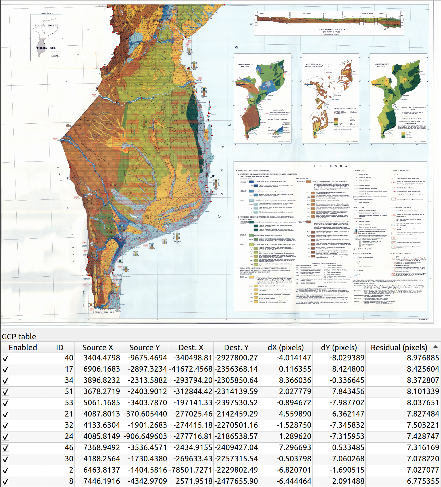
The image below shows the GCPs for Mozambique's Southern Region relative to the GAUL reference dataset. 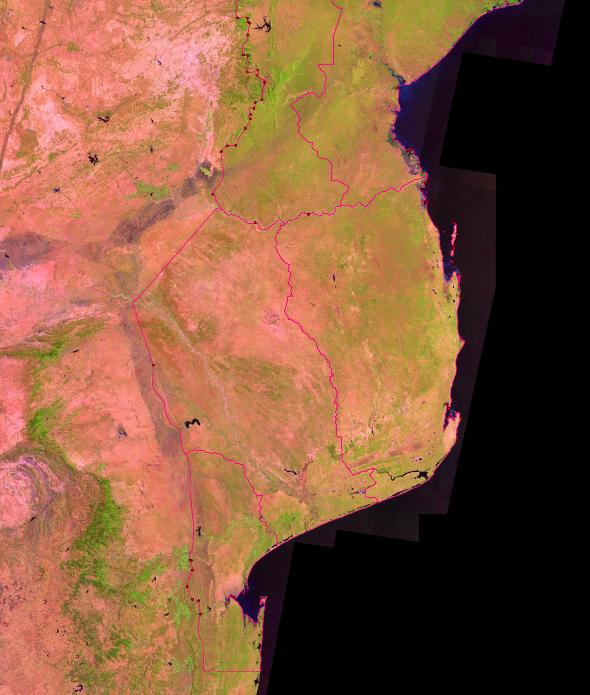
The GCPs for Mozambique's Southern Region can be found here. There were still small discrepancies between the georeferenced image and the reference dataset but to correct the discrepancies would warp the polygons too much to be a viable image.
Georeferencing Mozambique Northern Region¶
Note: Fewer iterations were required for the Northern Region of Mozambique as it was done using knowledge gained from georeferencing the Southern Region. The first 2 iterations were also done before the final iteration of georeferencing the South Region of Mozambique so were done before it was decided that using the Thin Plate Spline transformation was providing false results.
Georeferencing Parameters for Northern sheet¶
Test Parameters¶
This describes the parameters that were tested, and we found to be not adequate to use for georeferencing.
| Iteration | Transformation Type | Outcome |
|---|---|---|
| First | Thin Plate Spline transformation | All of the residual pixels were a false zero. 10 GCPs were used and resulted in good approximation that had some discrepancies between the georeferenced image and the reference dataset. |
| Second | Thin Plate Spline transformation | All the Residual Pixels were a false zero. Points were added to the previous attempt's GCPs to total 201 GCPs. The Northern Region of Mozambique had many small islands and outlying points that had to be 'forced' into the correct place and this caused significant warping on the image. |
Final Parameters Selected¶
After testing other types of transformations it was decided that using a Polynomial 3 transformation with 149 GCP
gave the best results. All the Residual Pixels for the GCPs were under 10. A polynomial 3 transformation was chosen as
it warped the image the least but had the fewest discrepancies between the reference dataset and the georeferenced
image. The image below shows the georeferencer with the GCPs on the map and the GCP table showing the residuals
being below 10 (Ground Control Point 124 has the highest Residual Pixels at 9.948533).
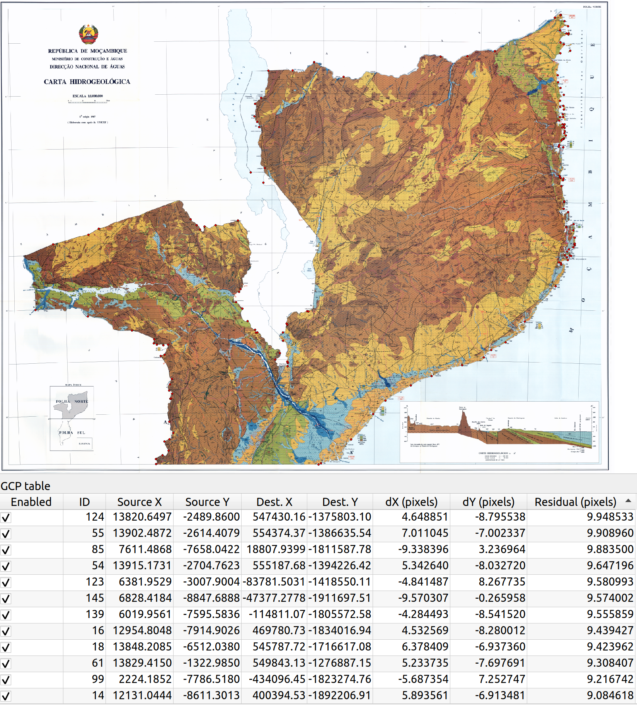
The image below shows the GCPs for Mozambique's Northern Region relative to the GAUL reference dataset.

The GCPs for Mozambique's Northern Region can be found here.
Checking Alignment of georeferenced Mozambique Images¶
Due to the nature of georeferencing scanned maps, there are slight discrepancies where the sheets meet each other but they are minimal.

The main discrepancy for Mozambique's Southern Region between the southernmost border of the Mozambique Hydrogeological Map_South Region tif and the GAUL reference dataset.
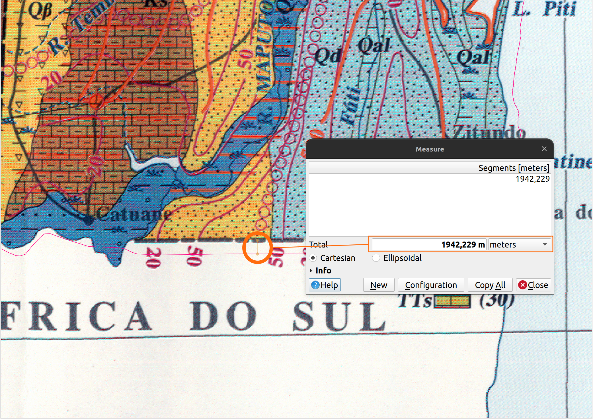
There are multiple discrepancies between the Northern Border of Mozambique Hydrogeological Map_North Region tif and the GAUL reference dataset. There are discrepancies where the administration boundary on the map and the GAUL boundary differ, and where the Ruvuma (formerly Rovuma) River's path on the Mozambique Hydrogeological Map_North Region tif differs from its path on the GAUL dataset( the path on the GAUL dataset is ratified by GLAD Landsat imagery). 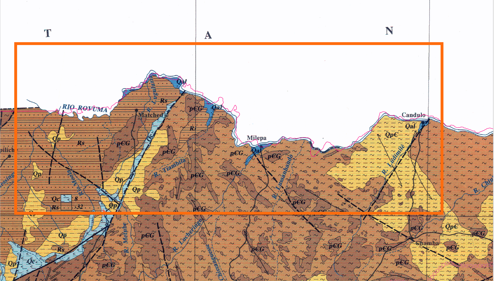
A closer look at one of the worse discrepancies: 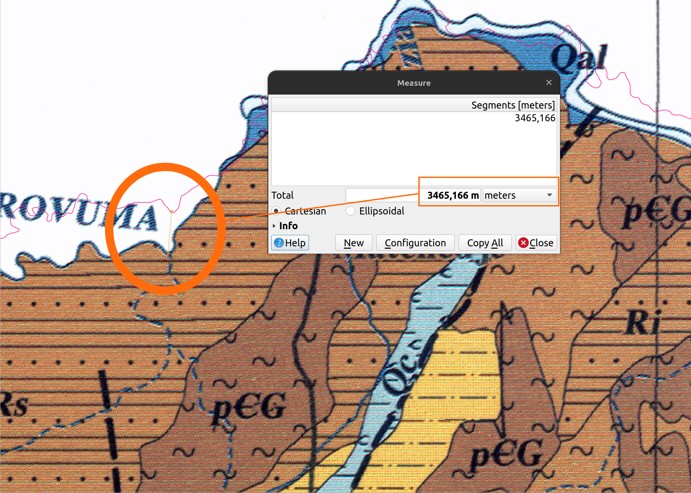
Zimbabwe¶
Four map sheets were provided to be georeferenced.
Analysis of Map Sheets before Georeferencing¶
After loading the raster images into QGIS and doing some investigation. The following conclusions were established:
-
Attempt to find any information about the Zimbabwe projection, datum, etc. through research. Finding the memoire for the sheets would be the ideal situation. The maps being from 1986 mean that their projection system was most likely based on the Arc 1950 datum (which is based on the Clarke 1880 ellipsoid).
-
Research did not yield the projection used for creating the sheets. The projection is required to make custom projected CRS for better georeferencing. The closest option found during research was a report from UNESCO from 1995 (Hydrogeological Maps A Guide and Standard Legend. Vol. 17., by Struckmeier, Wilhelm F, and Jean Margat) referencing the Zimbabwe Hydrogeological maps stating that "preferably UTM grid" was used for map locations. The Central Meridian (lon_0) and the Latitude of Origin (lat_0) were taken from the four Zimbabwe sheets and the +a and +rf values are for the Arc 1950 datum. Using this information, a custom tmerc (Transverse mercator) projection system was made using the proj4 string:
+proj=tmerc +lat_0=-19 +lon_0=30 +k=1 +x_0=0 +y_0=0 +a=6378249.145 +rf=293.4663077
+units=m +no_defs
Georeferencing Parameters for the four sheets¶
Georeferencing is an iterative process, and we needed to try different parameters to establish the most suitable ones to use.
The methods below describe the different parameters that were tested with the raster images.
Test Parameters¶
| Sheet | Iteration | Transformation Type | Outcome |
|---|---|---|---|
| One | First | Thin Plate Spline transformation | 11 GCPs were used but all the points had false zeroes for the Residual Pixels. There were multiple discrepancies between the georeferenced image and the reference image. |
| Two | First | Thin Plate Spline transformation | 12 GCPs were used but all the points had false zeroes for the Residual Pixels. There were multiple discrepancies between the georeferenced image and the reference image. |
| Three | First | Thin Plate Spline transformation | 8 GCPs were used but all the points had false zeroes for the Residual Pixels. There were multiple discrepancies between the georeferenced image and the reference image. |
| Four | First | Thin Plate Spline transformation | 12 GCPs were used but all the points had false zeroes for the Residual Pixels. There were multiple discrepancies between the georeferenced image and the reference image. |
Final Parameters Selected¶
The first iteration of georeferencing Zimbabwe Sheet 4 was the best result of the initial georeferencing attempts. So it was decided that Sheet 4 should be refined first and then used as a reference basis for the other images.
Refining Zimbabwe Sheet 4¶
| Iteration | Transformation Type | Outcome |
|---|---|---|
| First | Thin Plate Spline transformation | Done using 46 GCPs, all with a false zero value for their Residual Pixels. There were still discrepancies between the GAUL reference dataset and the georeferenced sheet's boundaries. |
| Second | Thin Plate Spline transformation | Done using 75 GCPs, all with a false zero value for their Residual Pixels. There were still major discrepancies between the GAUL reference dataset and georeferenced sheet's boundaries. This transformation type also warped the internal polygons of the georeferenced image. |
| Third | Polynomial 3 transformation | After a discussion, it was decided that the Residual Pixels from a Thin plate Spline transformation being zero was a false reading and so a Polynomial 3 transformation was chosen as it gave the best results. 42 GCPs were used with all the Residual Pixels being less than 10 (Point 16 was the GCP with the highest Residual Pixel value of 9.592993). The images below show the results of this transformation: |
The image below shows the georeferencer and part of the associated GCP table:

The image below shows the GCPs for Zimbabwe Sheet 4 relative to the GAUL reference dataset over the GLAD
Landsat dataset.

The GCPs for the Polynomial 3 transformation can be found here.
Note: There was not a lot of spatial information in the North Western section (Central region of Zimbabwe) of the sheet and the roads that are represented on the scanned map do not intersect with each other as they would in the real world.
Refining Zimbabwe Sheet 3¶
| Iteration | Transformation Type | Outcome |
|---|---|---|
| First | Thin Plate Spline transformation | Done using 29 GCPs, all with a false zero value for their Residual Pixels. There were significant discrepancies between the GAUL reference dataset and georeferenced sheet's boundaries. |
| Second | Polynomial 1 transformation | This transformation was chosen as it gave the best result out of the transformation types. Done using 11 GCPs with all the Residual Pixels for the GCPs were lower than 10. Despite all of Sheet 3's GCPs having lower Residual Pixel values than Sheet 4's GCPs, it had greater discrepancies along its western boundary. The images below show the results of this transformation: |
The Image below shows the discrepancies along Sheet 3's western boundary

The image below shows the georeferencer and part of the associated GCP table (Point 7 was the GCP with the highest Residual Pixel value of 1.211239): 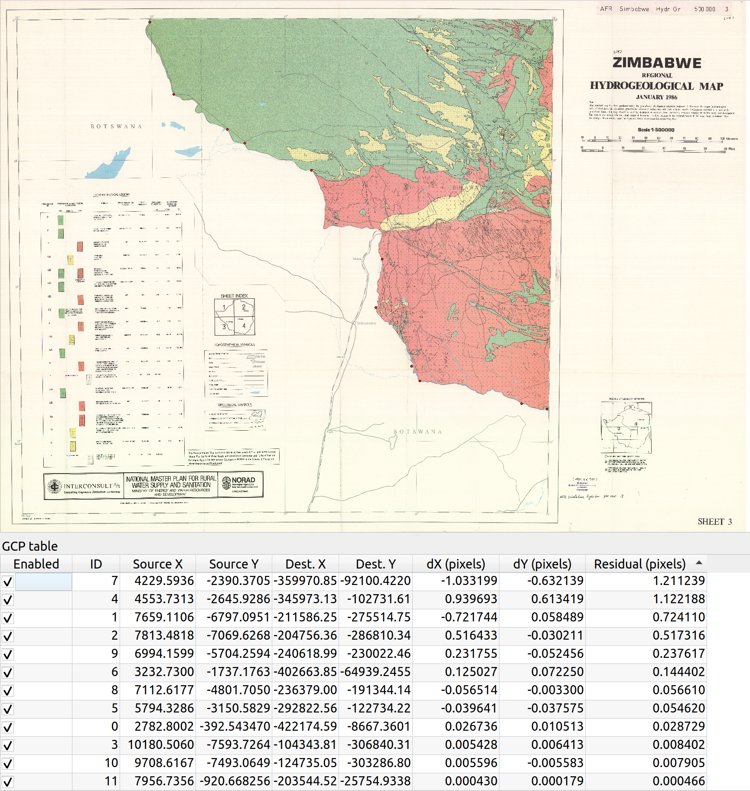
The image below shows the GCPs for Zimbabwe Sheet 4 relative to the GAUL reference dataset over the GLAD Landsat dataset. 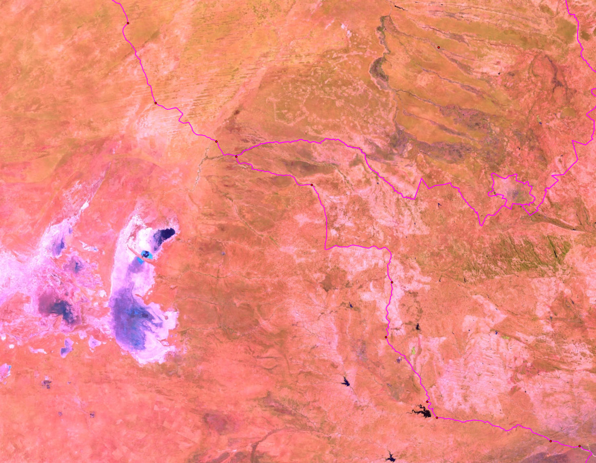
The GCPs for the Polynomial 1 transformation can be found here.
Note: There was not a lot of spatial information in the North Eastern section (Central region of Zimbabwe) of the sheet and the roads that are represented on the scanned map do not intersect with each other as they would in the real world.
Refining Zimbabwe Sheet 2¶
| Iteration | Transformation Type | Outcome |
|---|---|---|
| First | Thin Plate Spline transformation | This was done using 53 GCPs, all with a false zero value for their Residual Pixels. There were significant discrepancies between the GAUL reference dataset and georeferenced sheet's boundaries. |
| Second | Polynomial 3 transformation | This was done using 27 GCPs, where all the Residual Pixels for the GCPs were lower than 10. A Polynomial 3 transformation was used as it gave the best result out of the transformation types. The images below show the results of this transformation: |
The image below shows the georeferencer and part of the associated GCP table (Point 18 was the GCP with the
highest Residual Pixel value of 9.794608):

The image below shows the GCPs for Zimbabwe Sheet 2 relative to the GAUL reference dataset over the GLAD
Landsat dataset.

The GCPs for the Polynomial 3 transformation can be found here.
Note: There was not a lot of spatial information in the South Western section (Central region of Zimbabwe) of the sheet and the roads that are represented on the scanned map do not intersect with each other as they would in the real world. The Great Dyke was used where it was clear that a GCP could be placed.
Refining Zimbabwe Sheet 1¶
| Iteration | Transformation Type | Outcome |
|---|---|---|
| First | Thin Plate Spline | This was done using 53 GCPs all with a false zero value for their Residual Pixels. There were significant discrepancies between the GAUL reference dataset and georeferenced sheet's boundaries. |
| Second | Polynomial 1 transformation | This was done using 23 GCPs, where all the Residual Pixels for the GCPs were lower than 10. A Polynomial 1 transformation was used as it gave the best result out of the transformation types. Lake Kariba would have been ideal for reference points, however in the years since the map was published Lake Kariba's water level has lowered significantly and the shoreline has changed. The images below show the results of this transformation: |
All the Residual Pixels for the GCPs were lower than 10 (Point 17 was the GCP with the highest Residual Pixel value of
7.111510).

The image below shows the GCPs for Zimbabwe Sheet 1 relative to the GAUL reference dataset over the GLAD Landsat dataset. 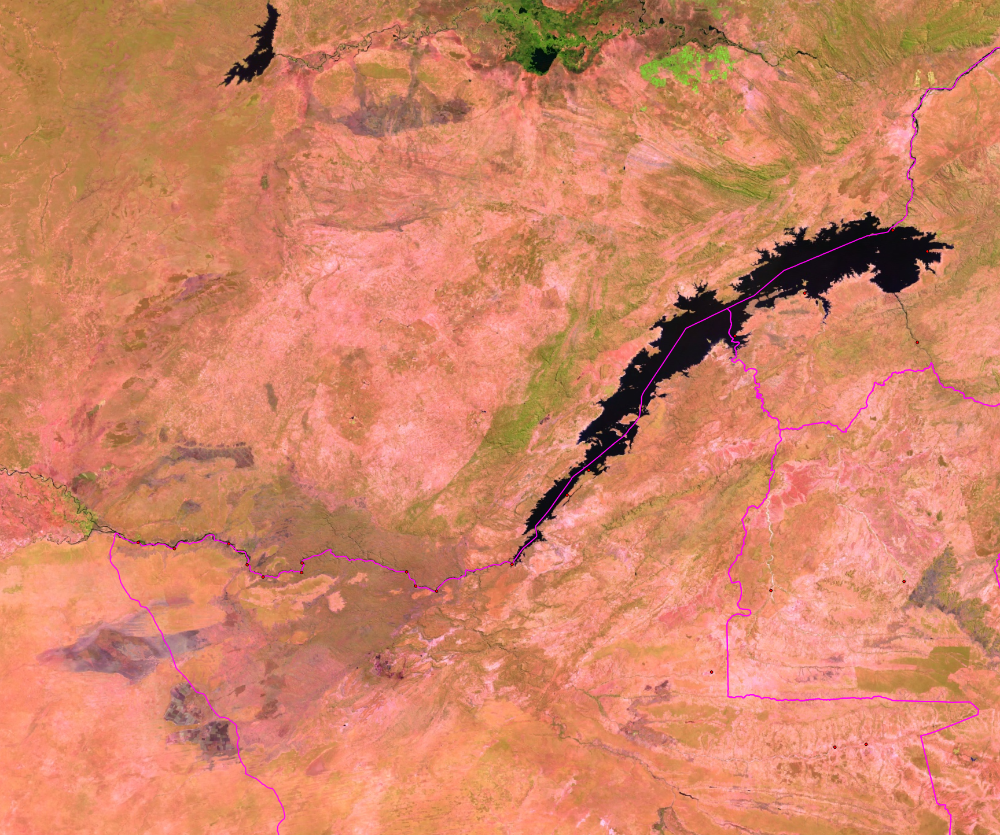
The GCPs for the Polynomial 1 transformation can be found here.
Note: There was some clear spatial information in the South Eastern section (Central region of Zimbabwe) of the sheet and the roads that are represented on the scanned map do not intersect with each other as they would in the real world. The Shangani River was used where it was clear that GCPs could be placed.
Checking Alignment of Zimbabwe sheets¶
Due to the nature of the scanned maps, there are discrepancies where the sheets interact with each other and there was a lack of reference information to be used as GCPs. The main discrepancies are where the four sheets meet in the central area of Zimbabwe. The discrepancies and their respective measurements are highlighted using the same coloured lines in the image below. The discrepancies between sheets edges get smaller closer to the country boundary of Zimbabwe due to there being multiple GCPs along the administration boundary.
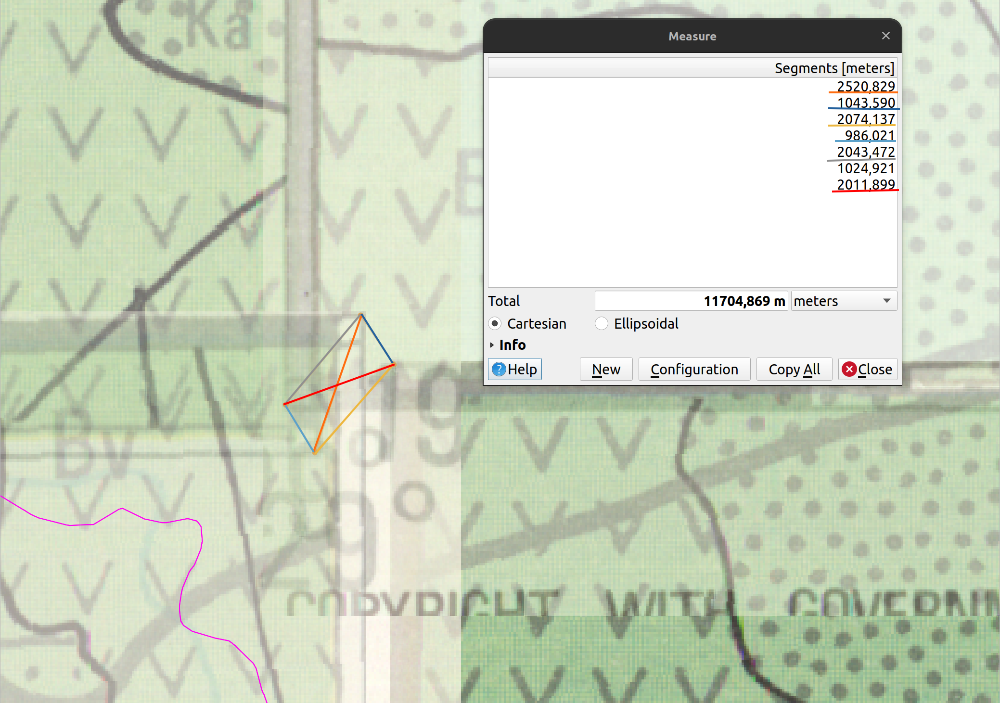
Refining Zimbabwe Georeferencing as a whole¶
It was noticed that the original images provided were already warped before any form of georeferencing took place. This meant that the original images didn't line up correctly with each other. This issue meant that the original georeferencing had major discrepancies in the central region of Zimbabwe.
The solution to this issue was to stitch the images together in an external software (Inkscape) and then georeference this stitched image. The stitched together image and its associated GCPs looked like this: 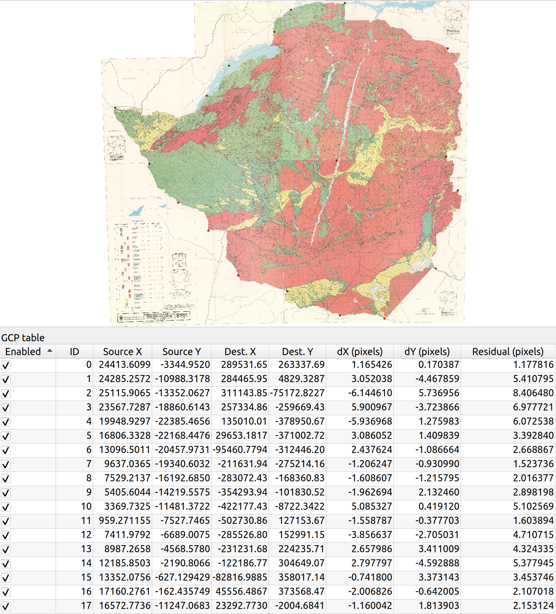
This image gave the best result of the georeferencing so was used for the digitization process.
All the Residual Pixels for the GCPs were less than 10 (Point 0 having the highest residual pixel value of 9.662356).
The GCPs from this transformation can be found here.
QA (Quality Assurance)¶
This section is divided into three parts:
- QA for the georeferenced worksheets
- QA for the digitized vector layers
- QA for the cartography
Georeferencing QA¶
The georeferenced focused on two areas split by different map sheets. The test will cover the following scenarios
- Merging layers. Zimbabwe consists of four georeferenced sheets, and we need to stitch the georeferenced layers into a seamless single raster image. Mozambique consists of two map sheets, and we need to establish if these sheets can be combined.
- Overlay with some standard open data. Vector data could be from OSM and any raster imagery.
QA for digitized vector layers¶
The following checks were carried out.
- Duplicate checks and Geometry validity
- Attribute table QA
- Topology checker
Topology checker¶
This primarily focuses on establishing if the vector features follow the vector topological model. Topology is a set of rules that model the relationships between neighbouring points, lines, and polygons and determines how they share geometry.
The following topological rules apply to the vector data:
- Boundaries should not cross each other (i.e., boundaries which would cross must be split at their intersection to form district boundaries). On the contrary, lines can cross each other, e.g. bridges over rivers.
- Lines and boundaries share nodes only if their endpoints are identical. Lines or boundaries can be forced to share a common node by snapping them together. This is particularly important since nodes are not represented in the coordinate file, but only implicitly as endpoints of lines and boundaries.
- Common area boundaries should appear only once (i.e., should not be double digitized).
- Areas must be explicitly closed. This means that it must be possible to complete each area by following one or more boundaries that are connected by common nodes, and that such tracings result in closed areas.
- It is recommended that area features and linear features be placed in separate layers. However, if area features and linear features must appear in one layer, common boundaries should be digitized only once. For example, a boundary that is also a line (e.g., a road which is also a field boundary), should be digitized as a boundary to complete the area(s), and a boundary which is functionally also a line should be labelled as a line by a distinct category number.
Snapping options¶
QGIS provides snapping tools which allow digitized vector data to follow the topological model and to be captured in a more timely manner.
General QGIS snapping configuration: 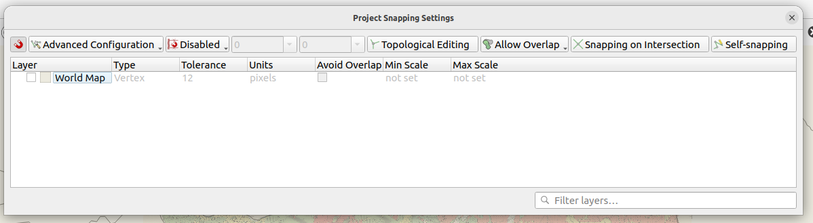
Project snapping options: 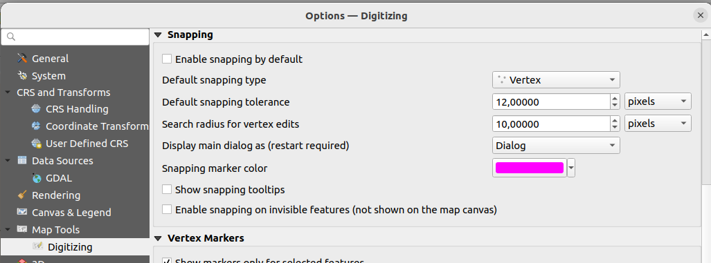
The snapping settings were the same for digitizing both Mozambique and Zimbabwe. They were set out as in the image below: 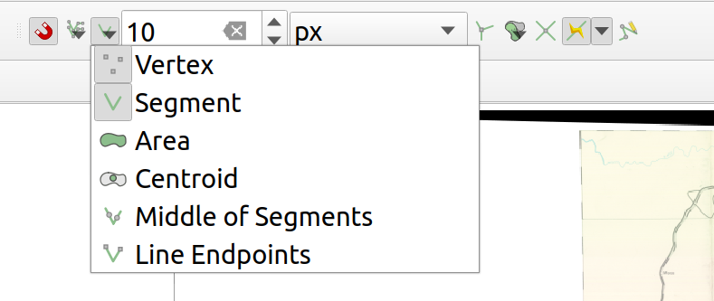
- : This means that snapping was enabled. Snapping helps to reduce the number of slivers and wedges created during the digitizing process.
- 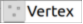: This means that QGIS will snap to previously digitized vertices according to the defined tolerance.
- 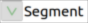: This means that QGIS will snap to previously digitized segments according to the defined tolerance.
- 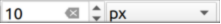: This is a user defined tolerance. For this project is was set at 10 pixels.
- : When this option is enabled QGIS will trace along previously digitized features. This feature was utilized in this project to speed up digitizing features that shared common vertices and/or segments.
Digitizing options¶
The digitizing of the various features was done using a mixture of Digitize with Segment and Stream Digitizing.
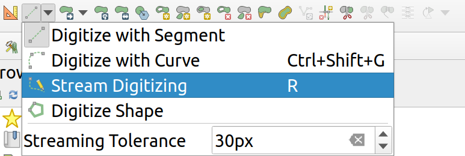
Digitize with Segmentwas used when digitizing larger features and straighter lines.Stream Digitizingwas used for smaller features and for more complex shapes within features (such as corners or multi-curved lines).
Topology checker Plugin¶
This was used to make sure the data conformed to the topology rules. Various rules were tested based on the data type.
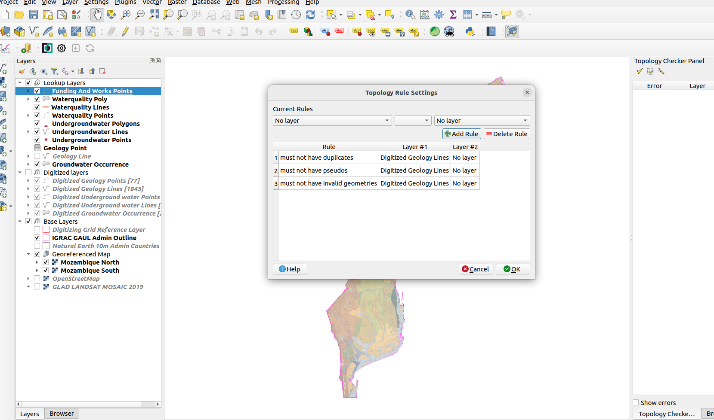
Different test are applicable for dataset type. The tool allows the following rules to be tested: 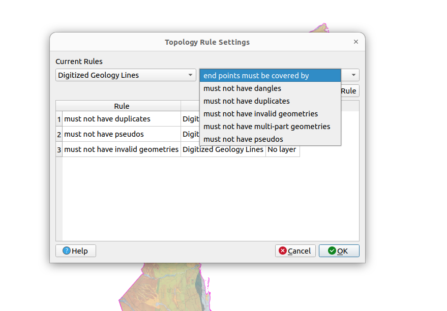
Geometry checker Plugin¶
This tool also provides a way to check if the topological relationship between features exists and are conformant.
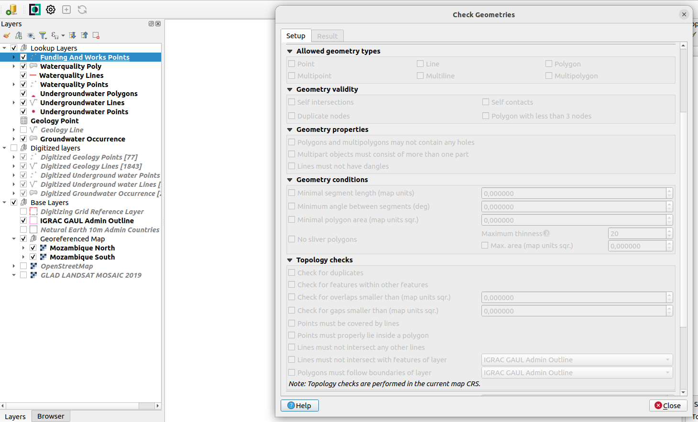
Duplicate checks and Geometry validity¶
They are two modalities for duplicates:
- Duplicate by attribute table
- Duplicate by geometry values
In our case we are interested in checking for duplicates by geometry. This will show us if we have two features that are captured at the same location. The default setting in QGIS is to run algorithms which adhere to the simple feature specification ( valid geometry).
- In this case we had to run the algorithm
Fix geometries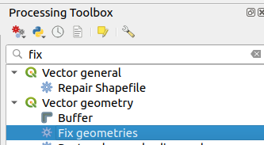 - This was followed by running the algorithm
delete duplicate geometriesfrom the vector layers. 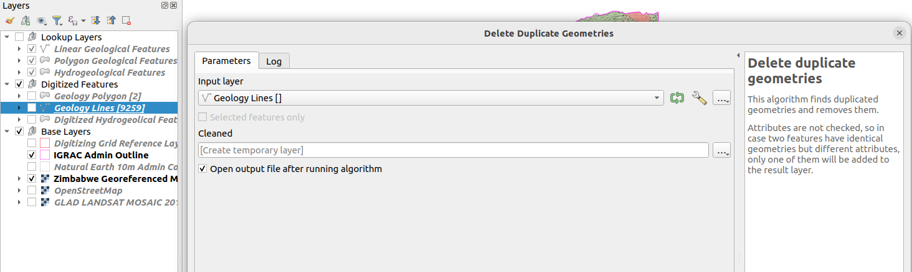
Check Duplicates by Symbology¶
Once all the duplicated features are removed from the vector features, we additionally checked for duplicates using QGIS Symbology
Check Duplicates by SQL¶
We ran some additional SQL commands in the DBManager to check for duplicates.
select geom, count(*)
from geology_lines
group by geom
HAVING count(*) > 1
This was run against all the layers that were generated for the Zimbabwe and Mozambique vector layers.
Attribute table QA¶
This check was done in the geopackage database to check if all the values are stored with the correct values. Since in the QGIS projects the values are linked by lookup tables. The lookup tables were not included the final project as they were for digitizing.
Lookup table in QGIS This is an example from the Zimbabwe geopackage. 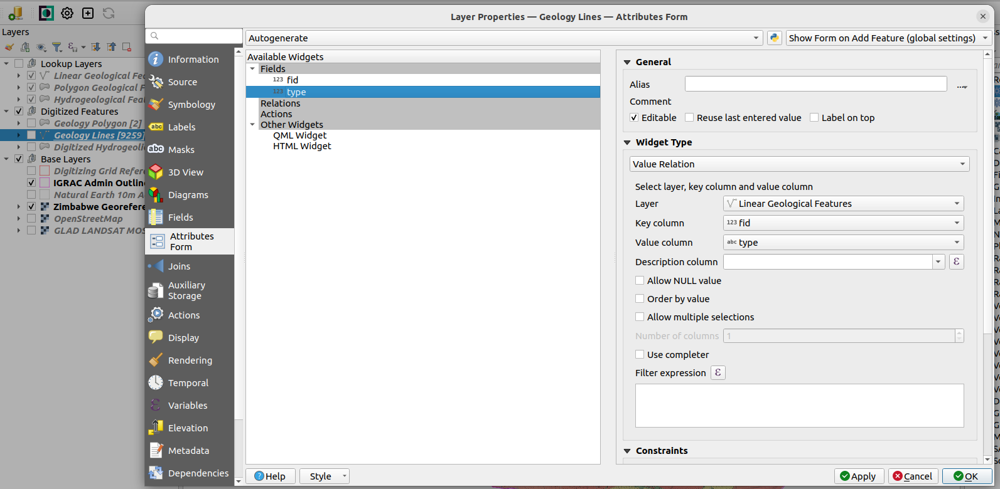
Actual values in the geopackage This is an example from the Zimbabwe geopackage. 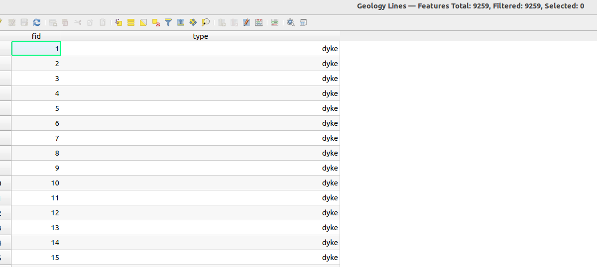
Zimbabwe vector features The image below depicts the vectorised geology features from the above example. 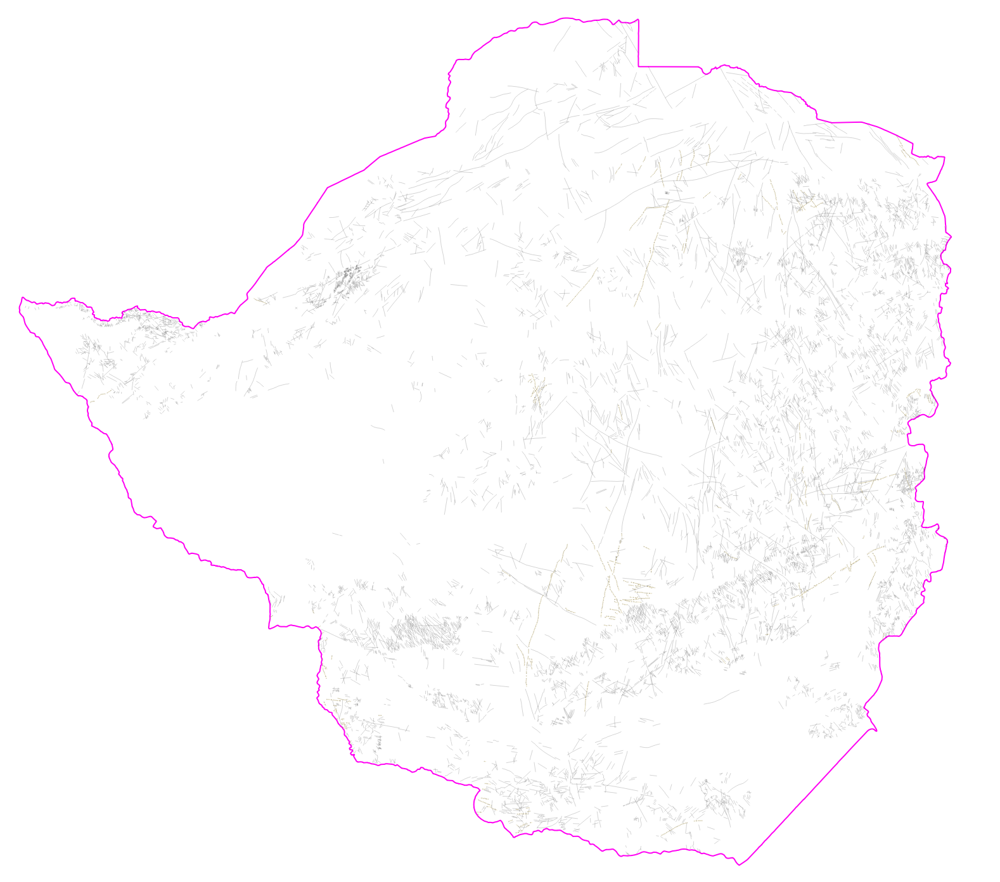
Zimbabwe Geology Lines A total of 9259 geology features were captured.
QA for cartography¶
Mozambique Cartography¶
The original map sheets contain a legend and other images which define how individual features should be symbolized. Not all of the features on the original legend were digitized, only the features specified by the client were digitized.
Mozambique legend and additional styling cues¶
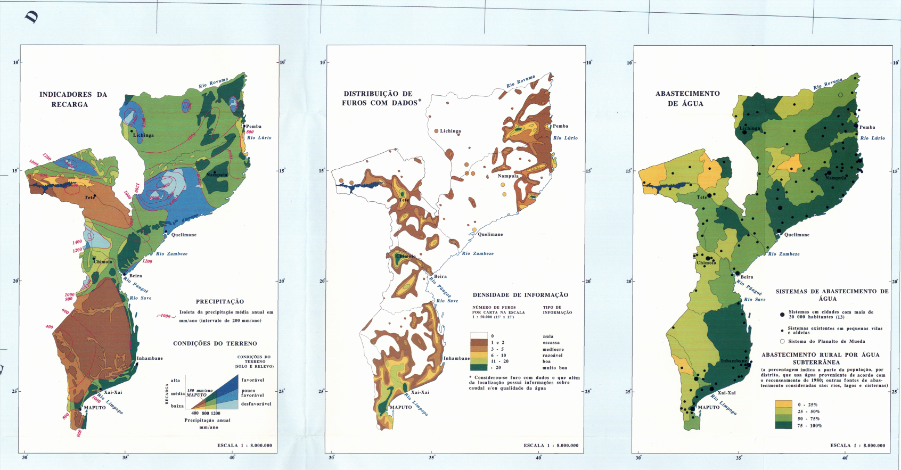
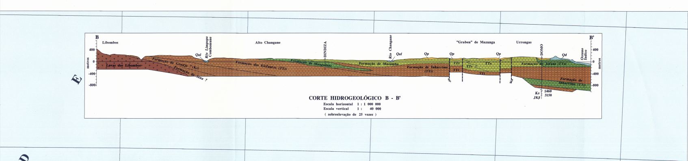
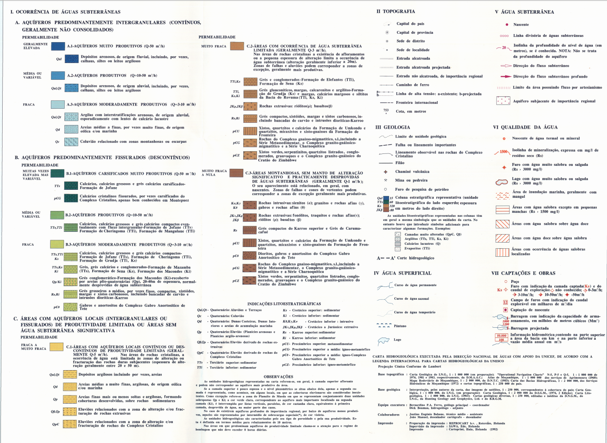
QGIS offers advanced cartography options but matching the legend to the symbology in QGIS involves considerable amount of time and effort. The symbology rules match the legend on the features that where digitized but some issues occur that will still need to be attended to:
- There is no 1 to 1 match from translating legend to symbology because the original dataset might have been made using a different GIS software and further refined in software like photoshop. The features were digitized and then styled using 'Map units' so that the styling was consistent with the original map and didn't vary greatly through the various scales as the map was viewed.
- Where SVG symbols were used to label some features, they needed to be scaled properly so that they could be visualized at the correct scale. 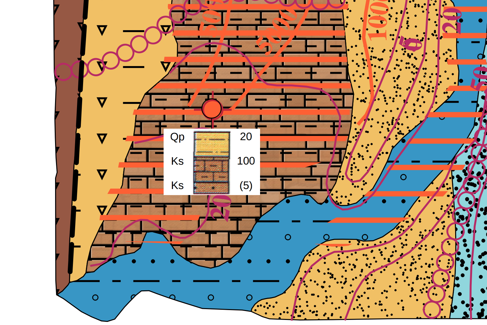
- Scale of the map: Since the original map is a small scale map, all features that are visible on the map visually look nice or closely match the original legend at some predefined scales in QGIS.
Mozambique Digitized layers¶
The image below depicts the vectorised features of Mozambique. 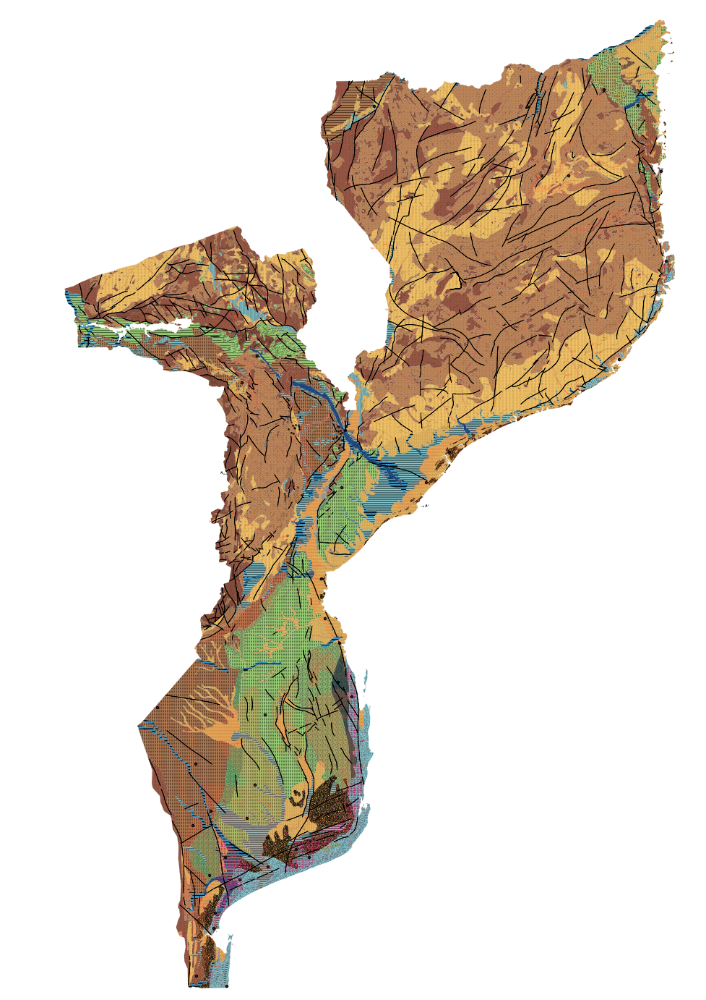
The QGIS project that will be shared are all stored in the geopackage and their corresponding style files. SVG symbols are also embedded in the projects and can be extracted to file.
Note: If the symbology needs to be used in GeoNode (SLD), additional work should be done to tweak the exported SLD.
Number of features digitized¶
The images below shows the break down of the 5377 digitized features in Mozambique:
| Portuguese Features | English Features |
|---|---|
| 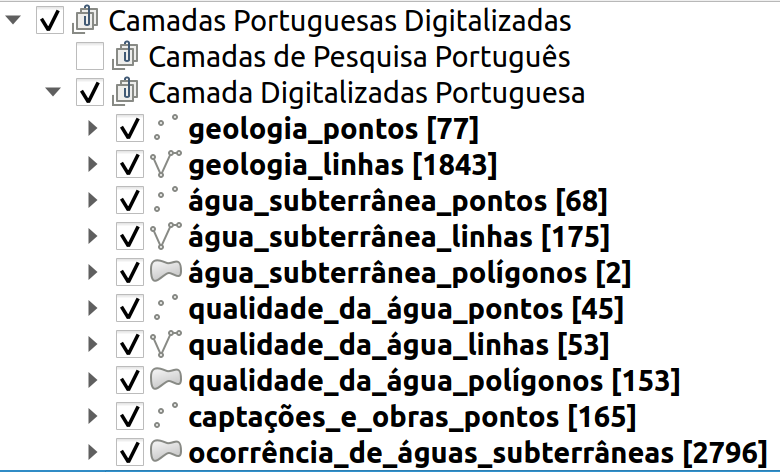 | 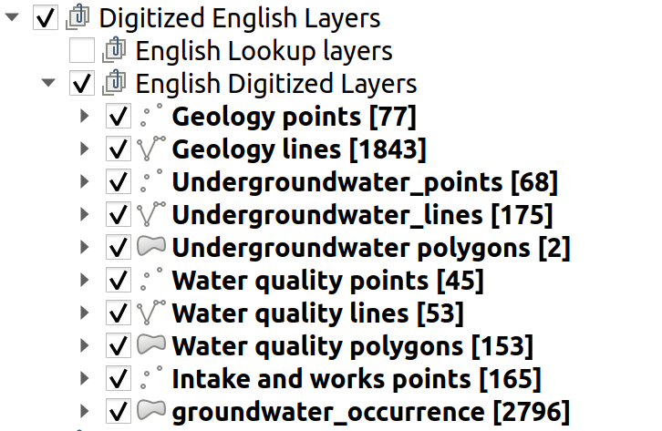 |
The layers were initially digitized in English and then duplicated and translated into Portuguese as this was faster than the GIS specialist working in a language they did not speak.
The features for Mozambique were split into lines, points, and polygons depending on how the features were represented on the original maps.
Groundwater Occurrence Features¶
All of the Groundwater Occurrence features for Mozambique are polygons and have been styled to be as close to the original map's styling as possible. On the original map, the groundwater occurrence features are listed first in the legend but in the project they are at the bottom of the layers list because otherwise none of the other layers would be visible.
| Portuguese Features | English Features |
|---|---|
| 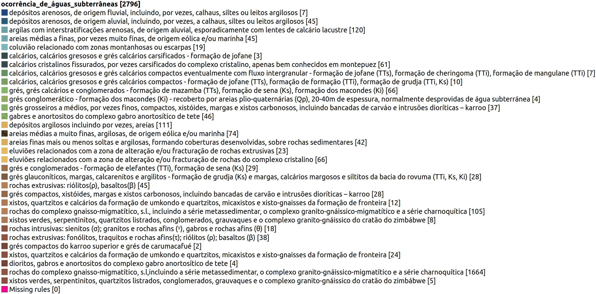 | 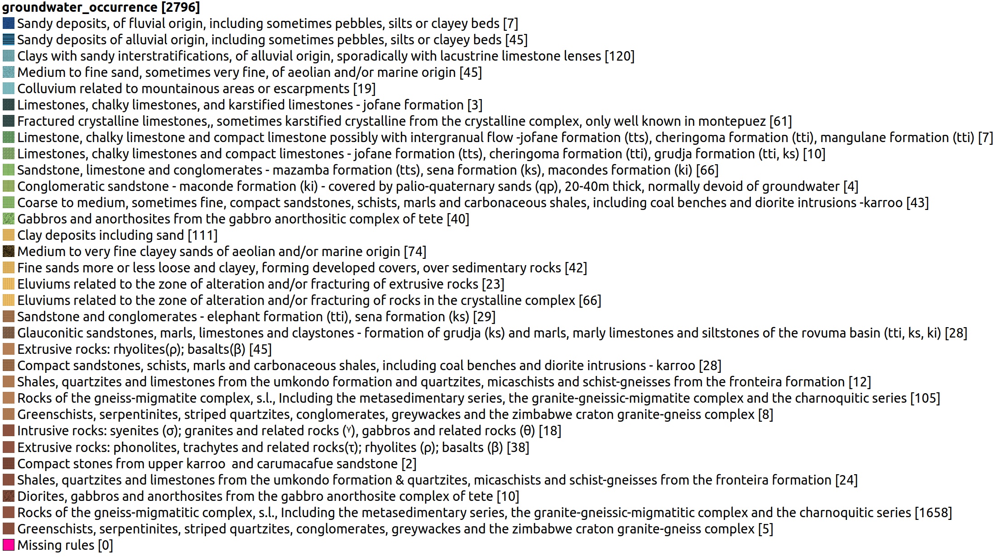 |
The bottom feature with a zero [0] feature count is the
Elserule to catch any features that have been digitized but have not been assigned values in the attribute table. TheElserule was used for digitizing and, at the client's request, is not included in the final project.
Geology Layers¶
The Geology features were digitized as points or lines depending on how they were represented on the original map. The stratigraphic columns needed to have special labels to represent the entire column.
| Portuguese Features | English Features |
|---|---|
| 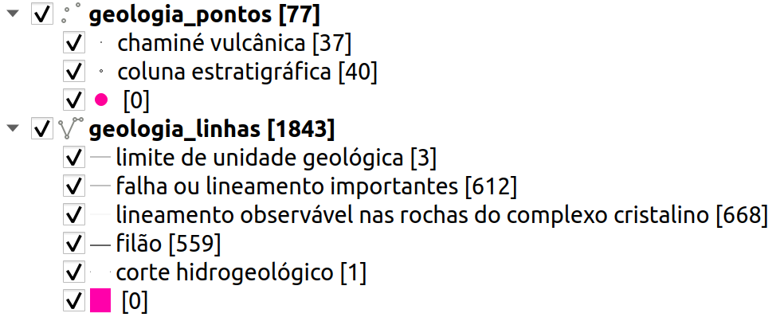 | 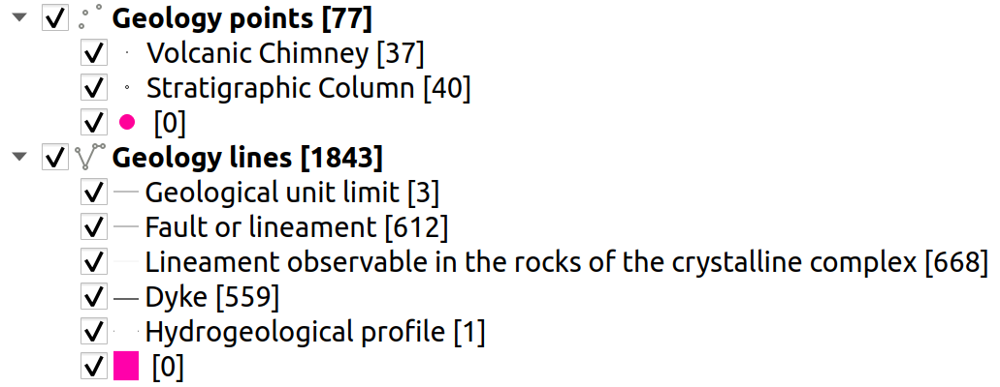 |
The bottom feature with a zero [0] feature count is the
Elserule to catch any features that have been digitized but have not been assigned values in the attribute table. TheElserule was used for digitizing and, at the client's request, is not included in the final project.
The stratigraphic columns on the original map had linked symbols that could not accurately represented in an attribute table. The solution was to clip the symbols from the original map and then use them as svg labels offset from the points. The labels only appear between a scale of 1:800000 and 1:100000 because above 1:800000 the labels wouldn't appear due to overlap and below 1:100000 the labels take up too much screen space so are unreadable.
| 1:800000 | 1:100000 |
|---|---|
| 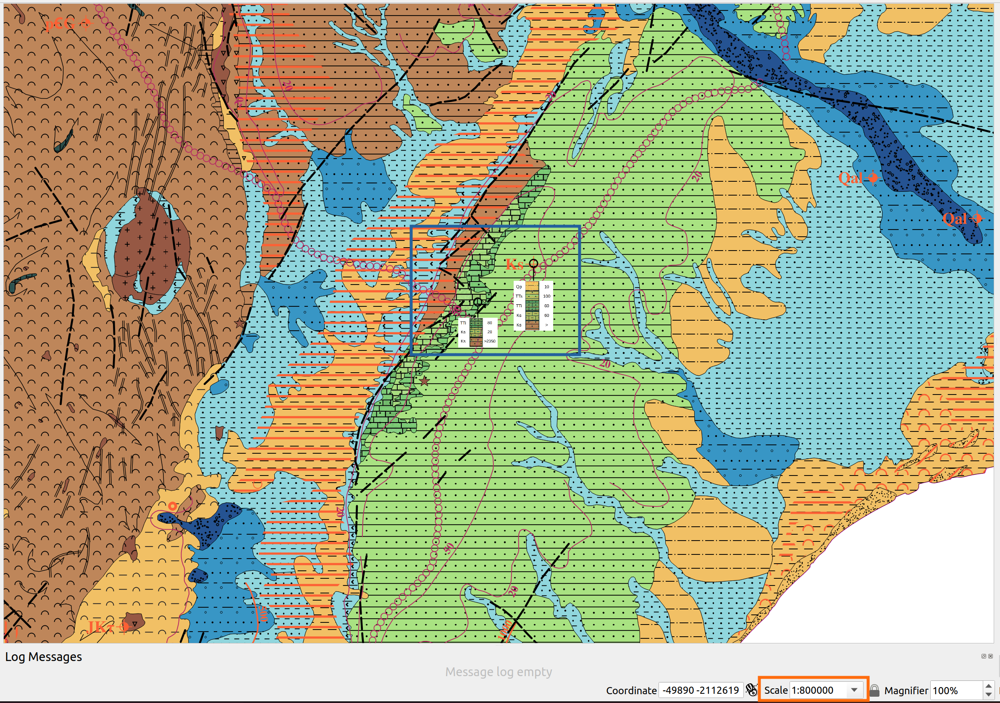 | 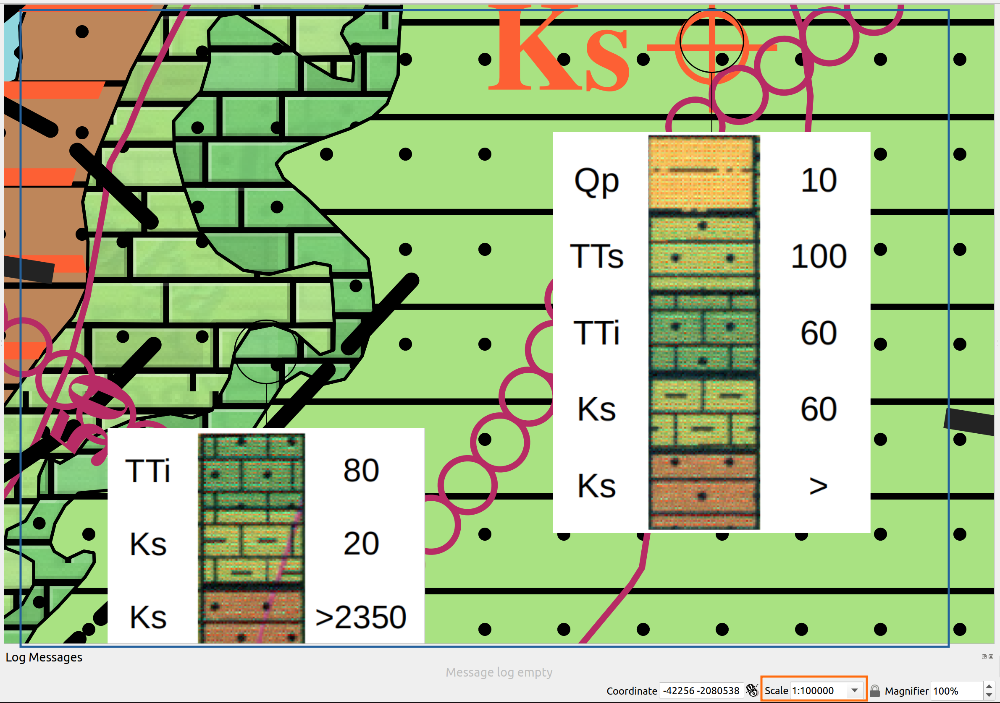 |
Underground Water Features¶
The Underground Water features were digitized as points, lines, or polygons depending on how they were represented on the original maps. Lines with depth are styled to have the depth as a label along the lines and flow direction lines were digitized as lines and styled as arrows.
| Portuguese Features | English Features |
|---|---|
| 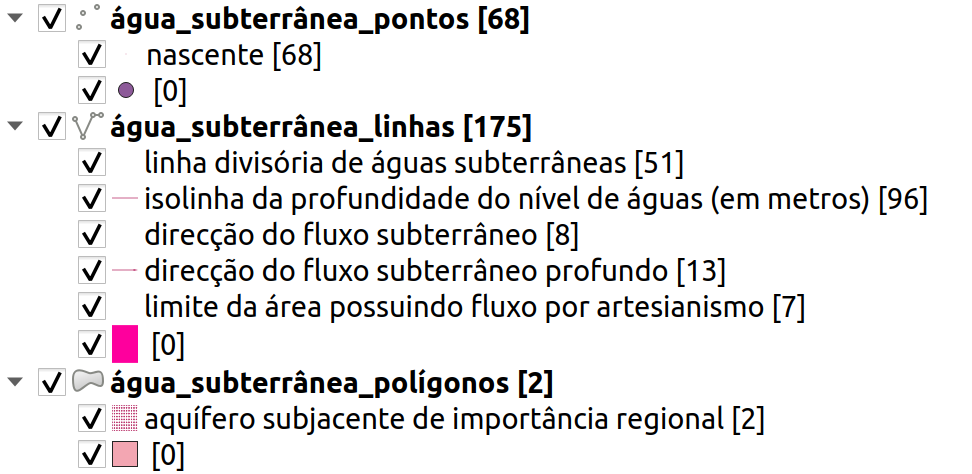 | 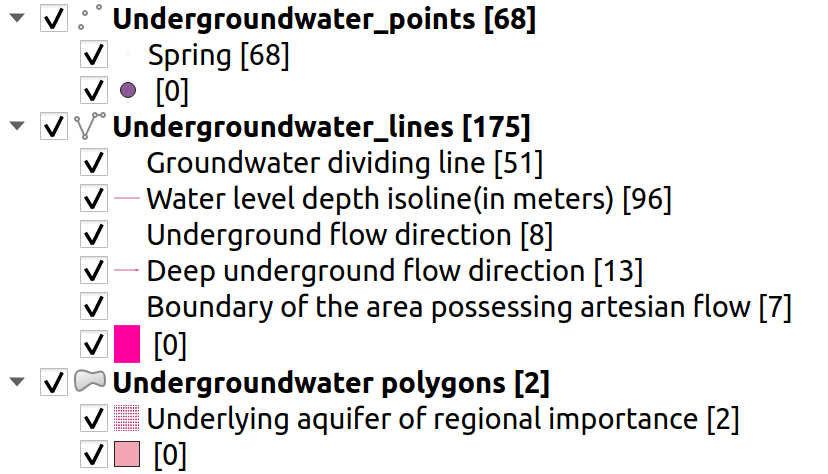 |
The bottom feature with a zero [0] feature count is the
Elserule to catch any features that have been digitized but have not been assigned values in the attribute table. TheElserule was used for digitizing and, at the client's request, is not included in the final project.
The depth values are labels that are parallel to the digitized lines. 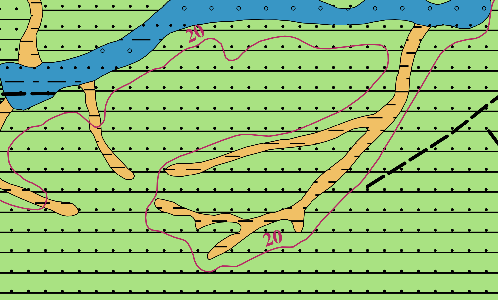
The underground flow direction arrows (both types are shown in the image below) were digitized as lines and then styled into arrows rather than being digitized as points with angles of direction. This was done as the digitized lines gave a more accurate result than trying to digitize a central point for each arrow and then assigning direction values. 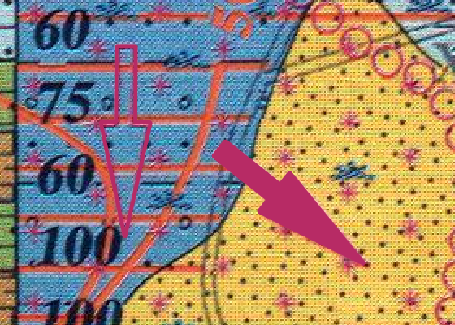
Water Quality Features¶
The Water Quality features were digitized as points, lines, or polygons depending on how they were represented on the original maps. The lines are labelled with their residue values.
| Portuguese Features | English Features |
|---|---|
| 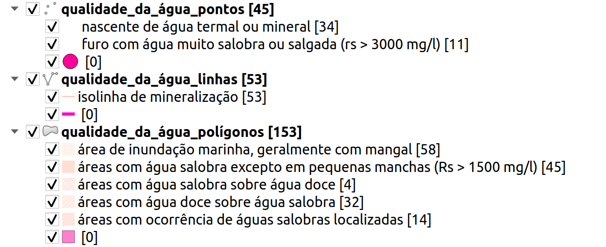 | 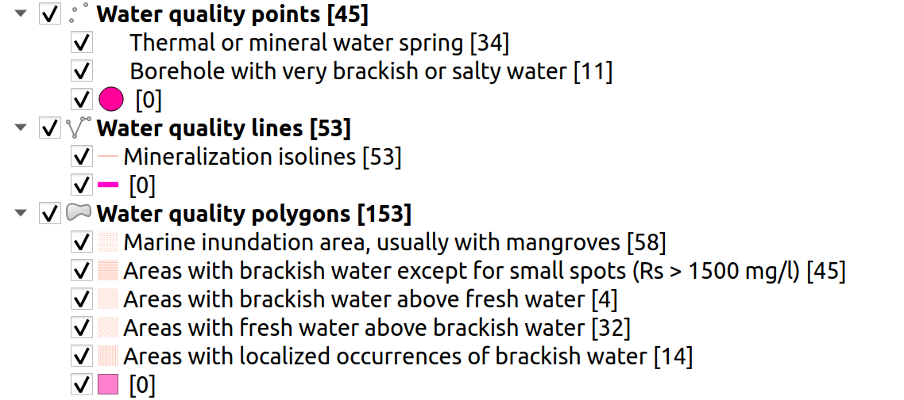 |
The bottom feature with a zero [0] feature count is the
Elserule to catch any features that have been digitized but have not been assigned values in the attribute table. TheElserule was used for digitizing and, at the client's request, is not included in the final project.
The residue values are labels that are parallel to the digitized lines. 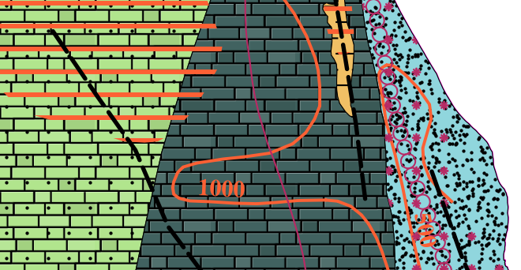
Intakes and Works Features¶
All of the Intakes and Works features were digitized as points with styled labels. The holes with indication of the tapped layer (ks) and exploration flow are labelled with their flow in the layers list to avoid lengthy labels. Where known on the original map, the tapped layer is also part of the labelling on the digitized map.
| Portuguese Features | English Features |
|---|---|
| 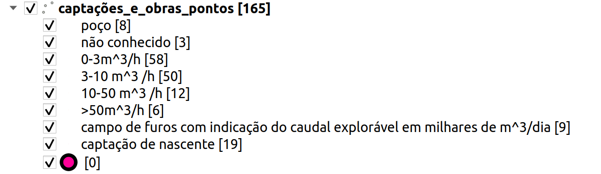 | 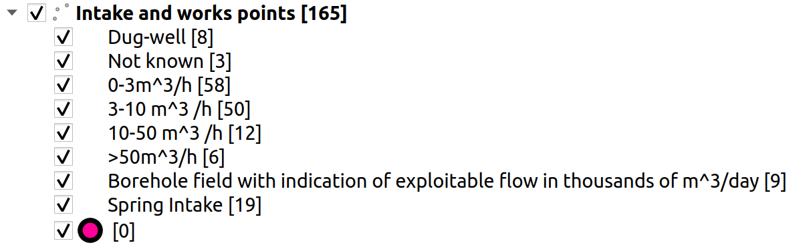 |
The bottom feature with a zero [0] feature count is the
Elserule to catch any features that have been digitized but have not been assigned values in the attribute table. TheElserule was used for digitizing and, at the client's request, is not included in the final project.
Where known from the original map, the tapped layers are displayed to the left of the digitized features. 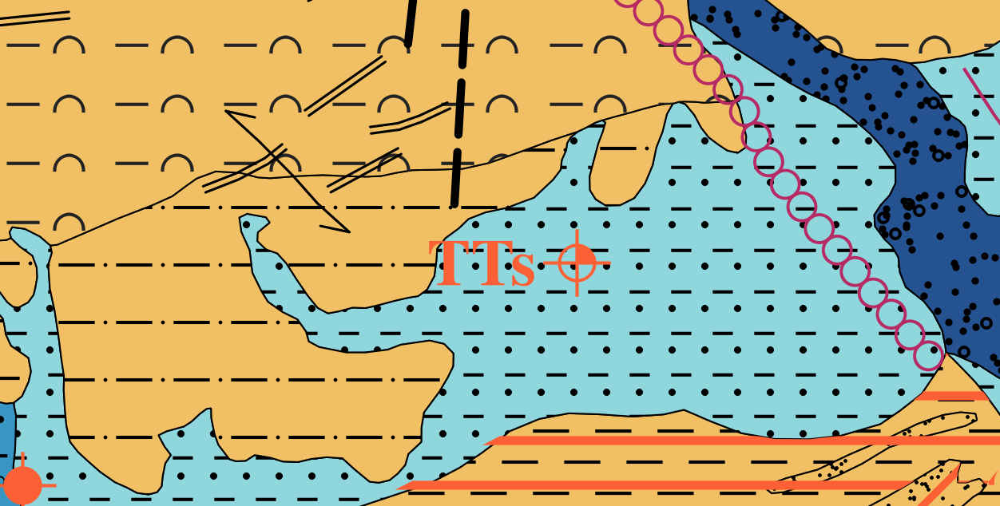
Zimbabwe Cartography¶
Zimbabwe Legend¶
The Zimbabwe legend does not contain multiple types of symbols that needed to be matched but the digitized symbols were made to match the original legend as closely as possible. There were however, over twice as many many features to digitize in Zimbabwe compared to Mozambique so it was a prolonged task.
Zimbabwe Digitized Layers¶
The image below depicts the vectorized features of Zimbabwe.
The features were digitized and then styled using 'Map units' so that the styling was consistent with the original map and didn't vary greatly through the various scales as the map was viewed.
Number of features digitized¶
The image below shows the break down of the 11576 digitized features in Zimbabwe:
The Hydrogeological Features¶
The hydrogeological features were all styled polygons to mimic the original maps.
The bottom feature with a zero [0] feature count is the
Elserule to catch any features that have been digitized but have not been assigned values in the attribute table. TheElserule was used for digitizing and, at the client's request, is not included in the final project.
The Geological Features¶
The geological features were split into lines and polygons depending on how the feature appeared on the original map.
The bottom feature with a zero [0] feature count is the
Elserule to catch any features that have been digitized but have not been assigned values in the attribute table. TheElserule was used for digitizing and, at the client's request, is not included in the final project.